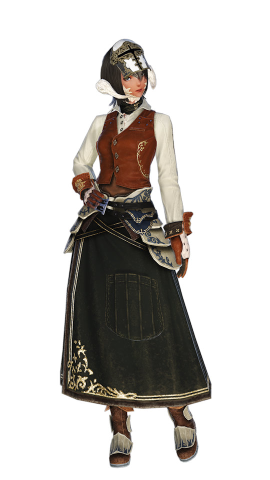

Crafters
Carpenter 
Carpenters harness the essence of wood, crafting everything from weapons to furniture. They are known for their skill in whittling and shaping wood to create objects of both utility

Types of Items Made: Bows, staves, wooden weapons, furniture, crafting tools, and housing items.
Unlock QuestBlacksmith
Blacksmiths are masters of the forge, working with fire and iron to create weapons and tools. They are the backbone of any army, supplying the weapons that arm the realm's defenders.

Types of Items Made: Swords, axes, daggers, hammers, pliers, and crafting tools for other professions.
Unlock QuestArmorer 
Armorers specialize in creating metal armor and shields. Their expertise ensures that warriors are well protected in battle with finely crafted gear.
Types of Items Made: Heavy armor, helmets, shields, and crafting tools.
Unlock QuestGoldsmith
Goldsmiths are artisans of the delicate, crafting intricate jewelry and fine metalwork. They work with precious metals and stones to create pieces that are both beautiful and magical.

Types of Items Made: Rings, earrings, necklaces, bracelets, staffs, and spectacles.
Unlock QuestLeatherworker
Leatherworkers are experts in manipulating leather and hides, turning them into versatile pieces of armor and clothing. They work with materials from the land to protect and adorn adventurers.
Types of Items Made: Leather armor, belts, gloves, boots, and bags.
Unlock QuestWeaver 
Weavers control the loom with precision, creating fabric from fibers. Their craft produces the cloth that clothes the realm, from the simplest tunics to the most elaborate robes.
Types of Items Made: Cloth armor, robes, hats, and decorative cloth items for housing.
Unlock QuestAlchemist
Alchemists are practitioners of a mysterious art, blending science with magic to create potions, elixirs, and other alchemical substances. Their knowledge of the properties of materials allows them to concoct brews that can heal, harm, or protect.
Types of Items Made: Potions, elixirs, stat buffs, and crafting materials.
Unlock QuestCulinarian 
Culinarians are chefs and gourmets, taking ingredients from across the land and sea to create dishes that delight the senses. Their cooking can provide sustenance and significant enhancements to those who partake in their meals.
Types of Items Made: Food for stat buffs and drinks.
Unlock QuestGatherers
Miner 
Miners excavate the earth, extracting valuable minerals and ores. Their work is essential for supplying materials for blacksmiths, armorers, goldsmiths, and other crafts.

Types of Items Gathered: Ores, stones, precious gems, and minerals.
Unlock QuestBotanist
Botanists harvest the bounty of the land, gathering wood, fibers, and plants. Their knowledge of flora is crucial for carpenters, weavers, alchemists, and culinarians.

Types of Items Gathered: Logs, seeds, fruits, vegetables, and other plant materials.
Unlock QuestFisher
Fishers ply the waters of Eorzea, catching fish and other sea creatures. Their patience and skill provide a vital food source and ingredients for alchemists and culinarians.
Types of Items Gathered: Fish, shellfish, and other aquatic creatures.
Unlock Quest